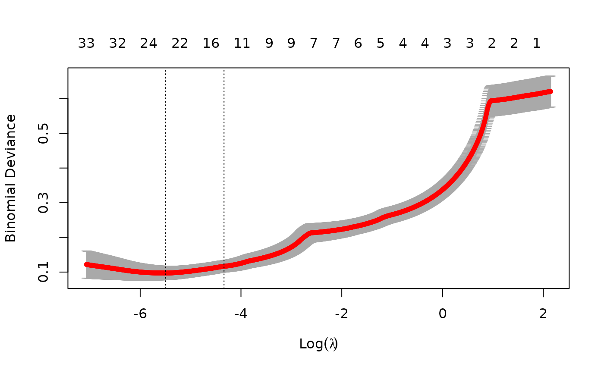

example_brca_logistic.Rmd
if (!require("BiocManager")) {
install.packages("BiocManager")
}
BiocManager::install("glmSparseNet")
library(dplyr)
library(ggplot2)
library(survival)
library(futile.logger)
library(curatedTCGAData)
library(MultiAssayExperiment)
library(TCGAutils)
#
library(glmSparseNet)
#
# Some general options for futile.logger the debugging package
flog.layout(layout.format("[~l] ~m"))
options(
"glmSparseNet.show_message" = FALSE,
"glmSparseNet.base_dir" = withr::local_tempdir()
)
# Setting ggplot2 default theme as minimal
theme_set(ggplot2::theme_minimal())The data is loaded from an online curated dataset downloaded from
TCGA using curatedTCGAData bioconductor package and
processed.
To accelerate the process we use a very reduced dataset down to 107 variables only (genes), which is stored as a data object in this package. However, the procedure to obtain the data manually is described in the following chunk.
brca <- curatedTCGAData(
diseaseCode = "BRCA", assays = "RNASeq2GeneNorm",
version = "1.1.38", dry.run = FALSE
)
brca <- TCGAutils::TCGAsplitAssays(brca, c("01", "11"))
xdataRaw <- t(cbind(assay(brca[[1]]), assay(brca[[2]])))
# Get matches between survival and assay data
classV <- TCGAbiospec(rownames(xdataRaw))$sample_definition |> factor()
names(classV) <- rownames(xdataRaw)
# keep features with standard deviation > 0
xdataRaw <- xdataRaw[, apply(xdataRaw, 2, sd) != 0] |>
scale()
set.seed(params$seed)
smallSubset <- c(
"CD5", "CSF2RB", "HSF1", "IRGC", "LRRC37A6P", "NEUROG2",
"NLRC4", "PDE11A", "PIK3CB", "QARS", "RPGRIP1L", "SDC1",
"TMEM31", "YME1L1", "ZBTB11",
sample(colnames(xdataRaw), 100)
)
xdata <- xdataRaw[, smallSubset[smallSubset %in% colnames(xdataRaw)]]
ydata <- classVFit model model penalizing by the hubs using the cross-validation
function by cv.glmHub.
fitted <- cv.glmHub(xdata, ydata,
family = "binomial",
network = "correlation",
nlambda = 1000,
options = networkOptions(
cutoff = .6,
minDegree = .2
)
)Shows the results of 1000 different parameters used to
find the optimal value in 10-fold cross-validation. The two vertical
dotted lines represent the best model and a model with less variables
selected (genes), but within a standard error distance from the
best.
plot(fitted)
Taking the best model described by lambda.min
coefsCV <- Filter(function(.x) .x != 0, coef(fitted, s = "lambda.min")[, 1])
data.frame(
ensembl.id = names(coefsCV),
gene.name = geneNames(names(coefsCV))$external_gene_name,
coefficient = coefsCV,
stringsAsFactors = FALSE
) |>
arrange(gene.name) |>
knitr::kable()| ensembl.id | gene.name | coefficient | |
|---|---|---|---|
| (Intercept) | (Intercept) | (Intercept) | -6.8189813 |
| AMOTL1 | AMOTL1 | AMOTL1 | 0.4430643 |
| ATR | ATR | ATR | 1.2498304 |
| B3GALT2 | B3GALT2 | B3GALT2 | -0.0867011 |
| BAG2 | BAG2 | BAG2 | -0.1841676 |
| C16orf82 | C16orf82 | C16orf82 | 0.0396368 |
| CD5 | CD5 | CD5 | -1.1200445 |
| CIITA | CIITA | CIITA | 0.4256103 |
| DCP1A | DCP1A | DCP1A | 0.2994599 |
| FAM86B1 | FAM86B1 | FAM86B1 | 0.2025463 |
| FNIP2 | FNIP2 | FNIP2 | 0.6101759 |
| GDF11 | GDF11 | GDF11 | -0.2676642 |
| GNG11 | GNG11 | GNG11 | 3.0659066 |
| GREM2 | GREM2 | GREM2 | -0.2014884 |
| GZMB | GZMB | GZMB | -2.7663574 |
| HAX1 | HAX1 | HAX1 | -0.1516837 |
| IL2 | IL2 | IL2 | 0.6327083 |
| MMP28 | MMP28 | MMP28 | -0.8438024 |
| MS4A4A | MS4A4A | MS4A4A | 1.1614779 |
| NDRG2 | NDRG2 | NDRG2 | 1.1142519 |
| NLRC4 | NLRC4 | NLRC4 | -1.4434578 |
| PIK3CB | PIK3CB | PIK3CB | -0.3880002 |
| ZBTB11 | ZBTB11 | ZBTB11 | -0.3325729 |
## [INFO] Misclassified (11)## [INFO] * False primary solid tumour: 7## [INFO] * False normal : 4Histogram of predicted response

ROC curve
## Setting levels: control = Primary Solid Tumor, case = Solid Tissue Normal## Setting direction: controls < cases## Warning: Using `size` aesthetic for lines was deprecated in ggplot2 3.4.0.
## ℹ Please use `linewidth` instead.
## This warning is displayed once every 8 hours.
## Call `lifecycle::last_lifecycle_warnings()` to see where this warning was
## generated.
## R version 4.3.2 (2023-10-31)
## Platform: x86_64-pc-linux-gnu (64-bit)
## Running under: Ubuntu 22.04.3 LTS
##
## Matrix products: default
## BLAS: /usr/lib/x86_64-linux-gnu/openblas-pthread/libblas.so.3
## LAPACK: /usr/lib/x86_64-linux-gnu/openblas-pthread/libopenblasp-r0.3.20.so; LAPACK version 3.10.0
##
## locale:
## [1] LC_CTYPE=C.UTF-8 LC_NUMERIC=C LC_TIME=C.UTF-8
## [4] LC_COLLATE=C.UTF-8 LC_MONETARY=C.UTF-8 LC_MESSAGES=C.UTF-8
## [7] LC_PAPER=C.UTF-8 LC_NAME=C LC_ADDRESS=C
## [10] LC_TELEPHONE=C LC_MEASUREMENT=C.UTF-8 LC_IDENTIFICATION=C
##
## time zone: UTC
## tzcode source: system (glibc)
##
## attached base packages:
## [1] stats4 stats graphics grDevices utils datasets methods
## [8] base
##
## other attached packages:
## [1] glmSparseNet_1.21.2 TCGAutils_1.22.2
## [3] curatedTCGAData_1.24.1 MultiAssayExperiment_1.28.0
## [5] SummarizedExperiment_1.32.0 Biobase_2.62.0
## [7] GenomicRanges_1.54.1 GenomeInfoDb_1.38.6
## [9] IRanges_2.36.0 S4Vectors_0.40.2
## [11] BiocGenerics_0.48.1 MatrixGenerics_1.14.0
## [13] matrixStats_1.2.0 futile.logger_1.4.3
## [15] survival_3.5-7 ggplot2_3.4.4
## [17] dplyr_1.1.4 BiocStyle_2.30.0
##
## loaded via a namespace (and not attached):
## [1] shape_1.4.6 jsonlite_1.8.8
## [3] magrittr_2.0.3 GenomicFeatures_1.54.3
## [5] farver_2.1.1 rmarkdown_2.25
## [7] fs_1.6.3 BiocIO_1.12.0
## [9] zlibbioc_1.48.0 ragg_1.2.7
## [11] vctrs_0.6.5 memoise_2.0.1
## [13] Rsamtools_2.18.0 RCurl_1.98-1.14
## [15] htmltools_0.5.7 S4Arrays_1.2.0
## [17] BiocBaseUtils_1.4.0 progress_1.2.3
## [19] AnnotationHub_3.10.0 lambda.r_1.2.4
## [21] curl_5.2.0 pROC_1.18.5
## [23] SparseArray_1.2.4 sass_0.4.8
## [25] bslib_0.6.1 desc_1.4.3
## [27] plyr_1.8.9 futile.options_1.0.1
## [29] cachem_1.0.8 GenomicAlignments_1.38.2
## [31] iterators_1.0.14 mime_0.12
## [33] lifecycle_1.0.4 pkgconfig_2.0.3
## [35] Matrix_1.6-1.1 R6_2.5.1
## [37] fastmap_1.1.1 GenomeInfoDbData_1.2.11
## [39] shiny_1.8.0 digest_0.6.34
## [41] colorspace_2.1-0 AnnotationDbi_1.64.1
## [43] ExperimentHub_2.10.0 textshaping_0.3.7
## [45] RSQLite_2.3.5 labeling_0.4.3
## [47] filelock_1.0.3 fansi_1.0.6
## [49] httr_1.4.7 abind_1.4-5
## [51] compiler_4.3.2 bit64_4.0.5
## [53] withr_3.0.0 backports_1.4.1
## [55] BiocParallel_1.36.0 DBI_1.2.1
## [57] highr_0.10 biomaRt_2.58.2
## [59] rappdirs_0.3.3 DelayedArray_0.28.0
## [61] rjson_0.2.21 tools_4.3.2
## [63] interactiveDisplayBase_1.40.0 httpuv_1.6.14
## [65] glue_1.7.0 restfulr_0.0.15
## [67] promises_1.2.1 grid_4.3.2
## [69] checkmate_2.3.1 generics_0.1.3
## [71] gtable_0.3.4 tzdb_0.4.0
## [73] hms_1.1.3 xml2_1.3.6
## [75] utf8_1.2.4 XVector_0.42.0
## [77] foreach_1.5.2 BiocVersion_3.18.1
## [79] pillar_1.9.0 stringr_1.5.1
## [81] later_1.3.2 splines_4.3.2
## [83] BiocFileCache_2.10.1 lattice_0.21-9
## [85] rtracklayer_1.62.0 bit_4.0.5
## [87] tidyselect_1.2.0 Biostrings_2.70.2
## [89] knitr_1.45 bookdown_0.37
## [91] xfun_0.42 stringi_1.8.3
## [93] yaml_2.3.8 evaluate_0.23
## [95] codetools_0.2-19 tibble_3.2.1
## [97] BiocManager_1.30.22 cli_3.6.2
## [99] xtable_1.8-4 systemfonts_1.0.5
## [101] munsell_0.5.0 jquerylib_0.1.4
## [103] Rcpp_1.0.12 GenomicDataCommons_1.26.0
## [105] dbplyr_2.4.0 png_0.1-8
## [107] XML_3.99-0.16.1 parallel_4.3.2
## [109] ellipsis_0.3.2 pkgdown_2.0.7
## [111] readr_2.1.5 blob_1.2.4
## [113] prettyunits_1.2.0 bitops_1.0-7
## [115] glmnet_4.1-8 scales_1.3.0
## [117] purrr_1.0.2 crayon_1.5.2
## [119] rlang_1.1.3 KEGGREST_1.42.0
## [121] rvest_1.0.4 formatR_1.14